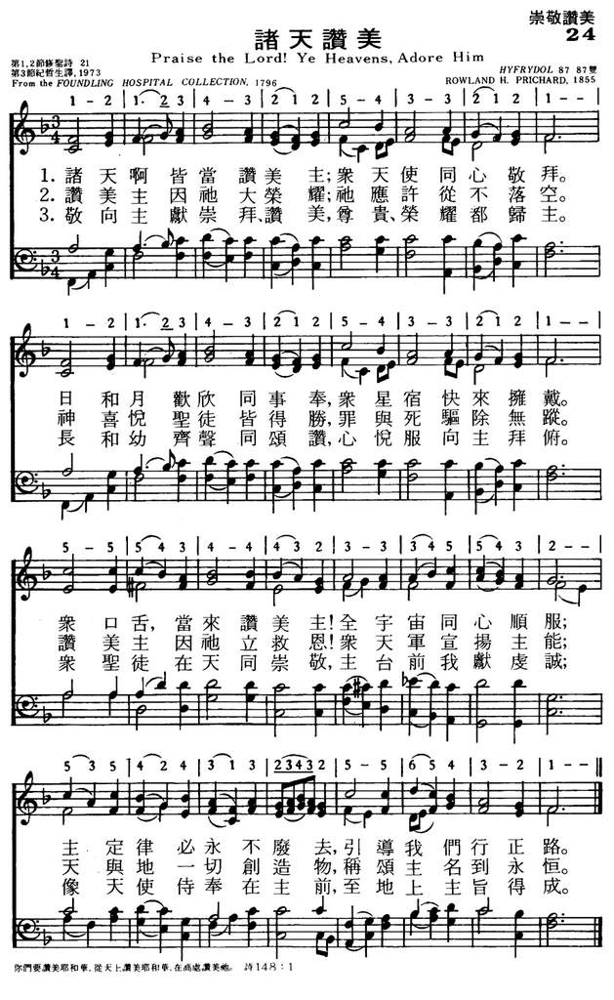
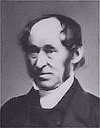

|
|
|
|
1 Praise the Lord! ye heav'ns adore him; 2 Praise the Lord! for he is glorious; 3 Worship, honor, glory, blessing, |
024诸天赞美
1.诸天啊皆当赞美主；众天使同心敬拜。
日和月欢欣同事奉，众星宿快来拥戴。 众口舌，当来赞美主！全宇宙同心顺服； 主定律必永不废去，引导我们行正路。 2.赞美主因祂大荣耀；祂应许从不落空。 神喜悦圣徒皆得胜，罪与死驱除无踪。 赞美主因祂立救恩！众天军宣扬主能； 天与地一切创造物，称颂主名到永�琚C 3.敬向主献崇拜、赞美，尊贵、荣耀都归主。 长和幼齐声同颂赞，心悦服向主拜俯。 众圣徒在天同崇敬，主台前我献虔诚； 像天使侍奉在主前，至地上主旨得成。 |
|
https://www.mred365.cn/szxg/7027.html
 https://hymnary.org/hymn/PFAS2012/page/982
|
|
|
|
|

-

https://www.youtube.com/watch?v=c7AlP3J9qVI -
https://www.youtube.com/watch?v=M_v70rhDwfA
LX1788
Praise The Lord! Ye
Heavens, Adore Him
024诸天赞美
颂新
詩 19:1-4
諸天述說神的榮耀，穹蒼傳揚祂手的作為。
這日到那日發出言語，這夜到那夜傳出知識。
無言無語，也無聲音可聽。
它們的聲浪傳遍天下，它們的言語傳到地極。
神在其中為太陽安設帳幕，
| Text: | Praise the Lord! Ye Heavens, Adore Him |
| Author (stanza 1-2): | Anonymous |
| Author (stanza 3): | Edward Osler |
| Tune: | HYFRYDOL |
| Composer: | Rowland H. Prichard |
Notes
A summons to a universal choir to praise the LORD, the Creator of heaven and earth, who has redeemed his people.
Scripture References:
st. 1 = vv. 1-6
st. 2 = vv. 7-10
st. 3 = vv. 11-14
A post-exilic hymn,
Psalm 148 maintains that God's glory displayed in creation and
redemption is so great that the praise on Israel's lips (as in 149)
needs to be supplemented by a chorus from all creation. Let everything
created in the heavens praise God for the majesty and ordered goodness
of the celestial realm
(st. 1). Let all created things on earth and in the seas praise their
Maker (st. 2). Let all people join in praising God for salvation "from
sin and shame" (st. 3). The versification of stanzas 1 and 3b is from an
anonymous leaflet appended to a collection of psalms, hymns, and anthems
for the Foundling Hospital in London (1796). Stanzas 2 and 3a (altered)
are from the 1912 Psalter. Other settings of Psalm
148 are at 188 and 466.
Liturgical Use:
This cosmic call to praise is fitting at the beginning of worship and
for many other occasions; especially appropriate for Thanksgiving and
for similar services focusing on how the creation around us praises the
Lord.
--Psalter Hymnal Handbook, 1988
========
Praise the Lord, ye heavens adore Him. [Ps. cxlviii.]
This hymn is given in a four-paged tract which is found pasted at the
end of some copies of the 1796 musical edition of the Psalms,
Hymns, and Anthems of the Foundling Hospital, London and again also
at the end of the edition of words only, published in 1801. When this
sheet was printed, and when it was added to the musical edition of 1796,
and then to the copy of words only, 1801, is unknown. As the 1801 ed. is
only a reprint of the words of the 1796 edition, it suggests that the
sheet was added to copies of both editions at the same time, and that
after the printing of the 1801 ed. The sheet has this title:—
"Hymns of Praise.
For Foundling Apprentices Attending Divine Service to return Thanks."
and the contents are:—
1. "Father of mercies! deign to hear." By the Rev. Mr. Hewlett. Music by
“Shield."
2. "Again the day returns of holy rest." By J. Mason. Music by "Ebden."
3. "Soon will the evening star with silver ray." By J. Mason. Music by
“Ebden."
4. "Praise the Lord, ye heav'ns adore Him." Music by "Haydn."
5. “While health, and strength, and youth remain.” Music by "Gluck."
To these are added the
words of a Sanctus to be sung "Before the Communion Service." The
special hymn now in consideration is printed thus:—
HYMN FROM PSALM CXLVIII. HAYDN.
i.
"Praise the Lord, ye heav'ns adore him;
Praise him angels in the height:
Sun and moon rejoice before him,
Praise him all ye stars and light.
ii.
"Praise the Lord, for he hath spoken;
Worlds his mighty voice obey'd:
Laws, which never shall be broken,
For their guidance hath he made.
iii.
"Praise the Lord, for he is glorious;
Never shall his promise fail:
God hath made his saints victorious;
Sin and death shall not prevail.
iv.
"Praise the God of our salvation;
Hosts on high his power proclaim:
Heaven, and earth, and all creation,
Laud and magnify his name."
The same text is again found in Psalms & Hymns for Magdalen Chapel, 1804; in the Foundling Collection of 1809, and then in J. Kempthorne's Select Portions of Psalms & Hymns 1810. In the last case slight changes are introduced, e.g. st. i. 1.7, "Laws which" to "Laws that": and st i. 1. 8, "hath He," to "he has." This form of the text was repeated very extensively to 1853, when it appeared in the Cooke and Denton Church Hymnal, with the well-known stanza by E. Osier, from Hall's Mitre Hymn Book, 1836:—
"Worship,honor, glory, blessing,
Lord we offer unto Thee;
Young and old Thy praise expressing,
In glad homage bend the knee.
All the saints in heaven adore Thee,
We would bow before Thy throne;
As Thine angels serve before Thee,
So on earth Thy will be done."
The use of this hymn
in all English-speaking countries, sometimes with the addition of
Osier's stanza, and at other times without, is very extensive.
The question of the authorship of this hymn has been a matter of serious
inquiry for some years, with the result that on the one hand it is
attributed to John Kempthorne, and on the other to Bishop Mant, and both
in error. The claim for John Kempthorne was made by D. Sedgwick; and
this claim, we find from his manuscripts, was a pure guess on his part.
Mr. Kempthorne's son (the Rev. E. Kempthorne, of Elton Rectory) said in
theGuardian (Dec. 10, 1879) that it was not
written by his father, and he has repeated the same to the writer of
this article during the progress of this work. Kempthorne, in the
Preface of the 2nd ed. of his Select Portions of Psalms
& Hymns, 1813, omits it from his list. It is clear therefore that
it was not written by John Kempthorne. The ascription of authorship to
Bishop Mant occurred through confounding the hymn "Praise the Lord Whose
mighty wonders" (q.v.), which appeared in Mrs. Mant's Parent's
Poetical Anthology, 1814, with this hymn.
--John Julian, Dictionary of Hymnology (1907)
================
Praise the Lord! ye heavens, adore him , p. 903, ii. Mr. W. T. Brooke informs us that he has discovered a leaflet with this hymn thereon, which was printed for General Use, and which he regards as an older copy of the hymn than that noted on p. 903, ii. That this may be so we admit, but that it is so is open to question, seeing that the leaflet is neither signed nor dated. The authorship and date of the writing and first printing of the hymn are therefore still open to investigation and research. The "Rev. Mr. Hewlett," referred to on p. 903, ii. 1, was John Hewlett, b. 1762, became Morning Preacher at the Foundling, about 1802, d. in London, April 13, 1844, and was buried in the vaults of the Foundling Chapel.
--John Julian, Dictionary of Hymnology, New Supplement (1907)
Tune Information
| Title: | HYFRYDOL |
| Composer: | Rowland H. Prichard (1830) |
| Meter: | 8.7.8.7 D |
| Incipit: | 12123 43212 54332 |
| Key: | A♭ Major |
| Copyright: |
Public Domain |
| Short Name: | Rowland Hugh Prichard |
| Full Name: | Prichard, Rowland Hugh, 1811-1887 |
| Birth Year: | 1811 |
| Death Year: | 1887 |
Rowland H. Prichard (sometimes spelled Pritchard) (b. Graienyn, near Bala, Merionetshire, Wales, 1811; d. Holywell, Flintshire, Wales, 1887)

.jpg/220px-Portrait_of_Mr._Pritchard_(4670459).jpg)
was a textile worker and an amateur musician. He had a good singing voice and was appointed precentor in Graienyn. Many of his tunes were published in Welsh periodicals. In 1880 Prichard became a loom tender's assistant at the Welsh Flannel Manufacturing Company in Holywell.
Bert Polma
owland Huw Prichard (14 January 1811 – 25 January 1887) was a Welsh musician. A native of Graienyn, near Bala, he lived most of his life in the area, serving for a time as a loom tender's assistant in Holywell, where he died.[1] In 1844 Prichard published Cyfaill y Cantorion (The Singer's Friend), a song book intended for children.
Prichard is remembered today as the composer of the hymn tune "Hyfrydol", to which the hymn "Alleluia! Sing to Jesus", with words by William Chatterton Dix is generally sung.
Notes
One of the most loved Welsh tunes, HYFRYDOL was composed by Rowland Hugh Prichard (b. Graienyn, near Bala, Merionetshire, Wales, 1811; d. Holywell, Flintshire, Wales, 1887) in 1830 when he was only nineteen. It was published with about forty of his other tunes in his children's hymnal Cyfaill y Cantorion (The Singers' Friend) in 1844.
Prichard (sometimes spelled Pritchard) was a textile worker and an amateur musician. He had a good singing voice and was appointed precentor in Graienyn. Many of his tunes were published in Welsh periodicals. In 1880 Prichard became a loom tender's assistant at the Welsh Flannel Manufacturing Company in Holywell.
HYFRYDOL (Welsh for "tuneful" or "pleasant") is often set to Charles Wesley's "Love Divine, All Loves Excelling" (568) and William C. Dix's "Alleluia! Sing to Jesus" (406). More recently the tune has appeared in several hymnals with Bliss's text.
A simple bar form (AAB) tune with the narrow range of a sixth, HYFRYDOL builds to a stunning climax by sequential use of melodic motives. Sing in unison or harmony, and observe one pulse per measure.
--Psalter Hymnal Handbook, 1987
Praise the Lord, Ye Heavens Adore Him Wordwise Hymns
Words: Stanzas 1 and 2 by an unknown author;
stanza 3 by Edward Osler (b. Jan. 31, 1798; d. Mar. 7, 1863)
Music: Hyfrydol, by Roland Huw Prichard (b. Jan. 14, 1811; d. Jan. 25, 1887)
Links:
Wordwise Hymns (Edward Osler)
The Cyber Hymnal
Note:
The first two stanzas of the hymn (author unknown) were written around 1801.
They appeared in a four-page tract, containing five hymns, that was pasted in
the back of a hymn book published for use by London’s Foundling Hospital (an
orphanage for abandoned children). Dr. Edward Osler added the third stanza in
1836, maybe thinking it needed to be a bit longer, or needed a fitting climax.
The Cyber Hymnal lists no less than five possible tunes used with this hymn.
(One of them, called Gotha, or Albert, was composed by Prince Albert, beloved
husband of Queen Victoria.) However, I believe the rousing Welsh tune Hyfrydol
suits the text of this great hymn best of all. (Hyfrydol is commonly used with
the hymn Our Great Saviour.)

Edward Osler
1798–1863
This is a great hymn of praise. As the original heading indicates, it is based
on Psalm 148. The heading reads: Hymn from Psalm CXLVIII, Haydn. (The reference
to composer Franz Josef Haydn perhaps suggests the use of his tune, composed in
1797, and sometimes called Haydn. We commonly use it for the hymn Glorious
Things of Thee Are Spoken.)
The Psalm that inspired the hymn says:
Praise the LORD! Praise the LORD from the heavens; praise Him in the heights!
Praise Him, all His angels; praise Him, all His hosts! Praise Him, sun and moon;
praise Him, all you stars of light! Praise Him, you heavens of heavens, and you
waters above the heavens! Let them praise the name of the LORD, For He commanded
and they were created” (Ps. 148:1-5).
Perhaps it’s fitting that most of this wonderful hymn is anonymous. For that
reason we are less distracted by human personalities and can focus our full
attention on the praise of God.
We can certainly see how human beings and angels can praise the Lord. We are
able to think about what He has done, and what it means to us and others, and
put our expressions of worship and thanksgiving into words. According to the
psalm, even the highest members of society (vs. 11), both old and young (vs. 12)
have reason to praise the Lord.
But, Psalm 148 speaks of praise extending far beyond that, summoning the
following to praise God: the sun, moon and stars (vs. 3); the waters above the
earth (vs. 4); animals, and the elements (vs. 7-8, 10); as well as mountains and
trees (vs. 9). Even nursing infants can praise God (cf. Ps. 8:2). Without
verbalizing it as we can, these all bring honour and glory to God:
¤ By fulfilling the purpose for which God created them. For example, when the
trees produce fruit for man and beast to eat, that glorifies God (cf. Ps.
104:14).
¤ Through the scientific discoveries of man. When we look at nature with clear
and unbiased vision, we see there the wonderful handiwork of God, and we are
moved to praise Him for it (cf. Ps. 19:1).
CH-1) Praise the Lord: ye heavens, adore Him;
Praise Him, angels in the height.
Sun and moon, rejoice before Him;
Praise Him, all ye stars of light.
Praise the Lord, for He hath spoken;
Worlds His mighty voice obeyed.
Laws which never shall be broken
For their guidance He hath made.
Beyond the world of nature, believers have reason to praise and worship God for
His wonderful salvation. He has promised that, through faith in Christ, sinners
can have their sins forgiven and receive the gift of eternal life (Jn. 3:16). He
has promised that whoever calls upon the name of the Lord in faith will be saved
(Rom. 10:13). And “never shall His promise fail” (CH-2).
CH-2) Praise the Lord, for He is glorious;
Never shall His promise fail.
God hath made His saints victorious;
Sin and death shall not prevail.
Praise the God of our salvation;
Hosts on high, His power proclaim.
Heaven and earth and all creation,
Laud and magnify His name.
“Every creature which is in heaven and on the earth and under the earth and such
as are in the sea, and all that are in them, I heard saying: ‘Blessing and
honour and glory and power Be to Him who sits on the throne, and to the Lamb,
forever and ever!’” (Rev. 5:13).
CH-3) Worship, honour, glory, blessing,
Lord, we offer unto Thee.
Young and old, Thy praise expressing,
In glad homage bend the knee.
All the saints in heaven adore Thee;
We would bow before Thy throne.
As Thine angels serve before Thee,
So on earth Thy will be done.
Questions:
1) How does even the wrath of man (Ps. 76:10) bring praise to God?
2) Will you encourage your church to learn and sing this great hymn, if they
don’t do so already?
Links:
Wordwise Hymns (Edward Osler)
The Cyber Hymnal
https://wordwisehymns.com/2014/05/21/praise-the-lord-ye-heavens-adore-him/
PRAISE THE LORD: YE HEAVENS, ADORE HIM (Osler)
Background: London’s Foundling Hospital was an orphanage that became famous for singing. It was founded in 1739 by a merchant named Thomas Coram who was also involved in promoting the Wesleys’ evangelistic efforts in Georgia.
By the early 1800s it was quite in vogue for Londoners to visit Sunday
services at the orphanage where the children were led in singing by
trained musicians and could be observed at dinner in their quaint costumes. Handel was
so fond of the institution that he donated a chapel organ and gave a
number of benefit performances of Messiah
to
raise funds for it.
The Foundling Hospital is remembered today chiefly through a hymnbook called Psalms, Hymns, and Anthems of the Foundling Hospital, London, which was published by Coram in 1796. Pasted into the jacket of that hymnbook were the words to this hymn. Though there is much conjecture about the authorship of the text, each theory has been refuted, and it remains anonymous.
However, the various tunes that are commonly associated with the text
are more easily studied. For instance, the first tune that was used with the
text was Franz
Joseph Haydn’s Austrian
Hymn.
The tune gained its notoriety as Deutschland,
Deutschland, über Alles, but began its life as Gott
erhalte Franz, den Kaiser (God Save Emperor Franz) and
it was first performed on Franz’ birthday in 1797. Since some came to
associate the tune Austrian
Hymn with Hitler, the text to Praise
the Lord: Ye Heavens, Adore Him is often coupled with the
hymn tune Hyfrydol.
The first verse of the hymn is a paraphrase of Psalm 148 which shows all of creation praising the Lord, from the angels and heavenly hosts above to the creatures of the sea and land below. Implicit in this praise is the fact that God has created all of these beings and provides for their needs. His most loving provision is the redemption He’s offered to us from sin and death, which is the subject of the second verse.
The third verse, which was added in 1836 by Edward Osler in his journal Church and King and first appeared in Hall’s Mitre Hymn Book is a doxology of praise for both the creation of the first verse and the redemption of the second. It is truly a fitting response to God’s goodness.
http://www.hymntime.com/tch/htm/p/t/h/e/pthelyeh.htm

Above: Truro, England, Between 1890 and 1900
EDWARD OSLER (JANUARY 31, 1798-MARCH 7, 1863)
English Doctor, Editor, and Poet
Edward Osler was the house surgeon at Swansea Infirmary from 1819 to 1836. That
was noble work, to be sure. But he felt the need for a change. So our saint went
to work in London then in Bath for the Society for Promoting Christian
Knowledge. Then, in 1841, he transferred to Truro to assume the job he held
until his death: Editor of the Royal Cornwall Gazette. His literary interests
and skills were already established, for he had helped to produce Psalms and
Hymns Adopted to the Service of the Church of England (“The Mitre Hymnal”) in
1836. That volume included fifty of his hymns and fifteen of his psalm settings.
Two of Osler’s hymns which I have added to my GATHERED PRAYERS blog, “Lord of
the Church, We Humbly Pray” and “O God Unseen, Yet Ever Near,” come from that
hymnal. Also from “The Mitre Hymnal” is this, the third stanza of “Praise the
Lord: Ye Heavens Adore Him,” as printed in The Hymnal (1933):
Worship, honor, glory, blessing,
Lord, we offer unto Thee;
Young and old, Thy praise expressing,
In glad homage bend the knee.
All the saints in heaven adore Thee;
We would bow before Thy throne:
As Thine angels serve before Thee,
So on earth Thy will be done.
https://neatnik2009.wordpress.com/tag/edward-osler/